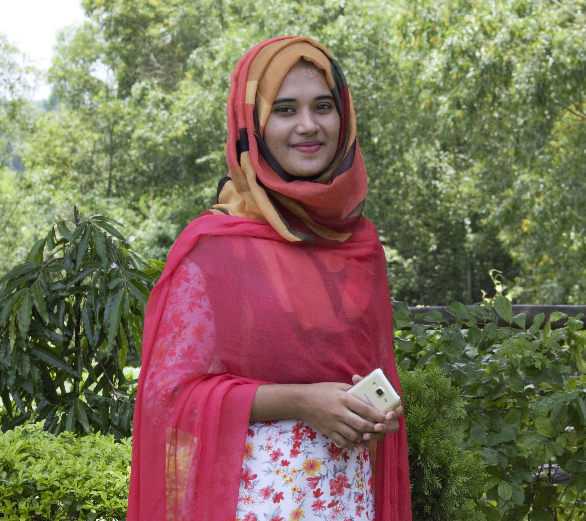

Curriculam Vitae | ||||||||||||||||
|---|---|---|---|---|---|---|---|---|---|---|---|---|---|---|---|---|
Name : Farhana Rahnam Final year student of dept.of ICT at Comilla UniversityEmail Address:rahmanfarhana045@gmail.com Mobile No :01521257318 Address :Peace Cotage,DhanmondiRoad,RaceCourse,Cumilla. Carieer Objective :Want to be a BCS(Admin) cadre officer. I will want to play most significant role for government activities regarding policy formulation and implementation for the betterment of the nation. Skills
Personal Certificates:
Qualifications:
Experiences:
Projects:
“A rescue robot is a robot that has been designed for the purpose of rescuing people. Common situations that employ rescue robots are mining accidents or earth quake. The benefits of rescue robots to these operations include reduced personnel requirements, reduced fatigue, and mostly, access to unreachable areas.” Here we use the arduino uno microcontroller board with three ultrasonic sonar sensor those can sense the existence of object. Human detection is achieved via mlx thermo sensor. The objective of this project is to save someone's life.Through this application anyone who is interested in donating the blood can register himself/herself.In the emergency case users can find desired donar in the shortest time.For developing this application we use XML for front end development and use java for back end development.We also use firebase for registering donar amd providing donar's information to the users. Personal Information:
Hobbies
|